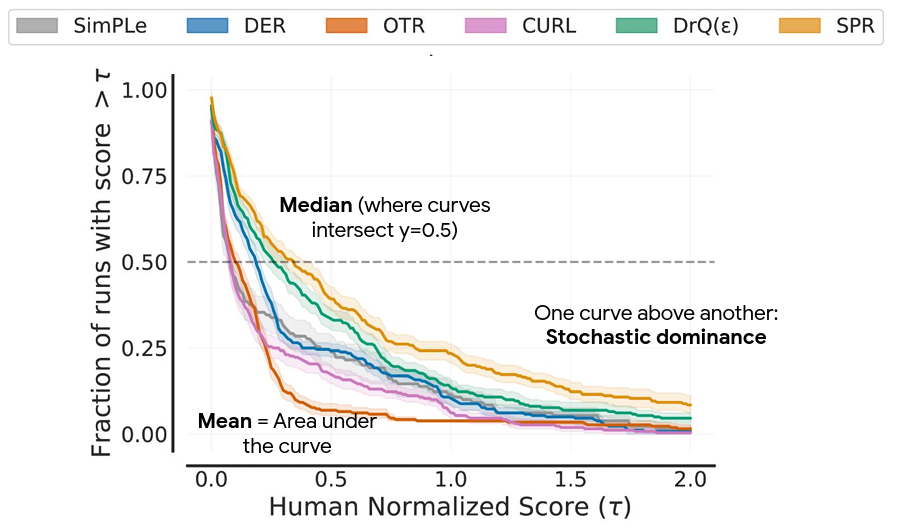

RL Tips and Tricks
Outline
-
RL Tips and Tricks
- General Nuts and Bolts of RL Experimentation
- RL in practice on a custom task
-
Practical Tips for Reliable RL
- Best Practices for Empirical RL
- SB3: Reliable RL Implementations
- RL Zoo: Reproducible Experiments
- Implementing a New Algorithm
RL Tips And Tricks
1. General Nuts and Bolt of RL Experimentation
RL is Hard (1/2)

Which algorithm is better?
The only difference: the epsilon value to avoid division by zero in the optimizer
(one is eps=1e-7
the other eps=1e-5)
RL is Hard (2/2)
- Data collection by the agent itself
- Sensitivity to the random seed / hyperparameters
- Sample inefficient
- Reward function design

Credits: Rishabh Mehrotra (@erishabh)
Best Practices
- Quantitative evaluation
- Use recommended hyperparameters
- Save all experiments parameters
- Use the RL zoo
RL in practice on a custom task
Do you need RL?
Do you really need RL?
Defining a custom task
- Observation space
- Action space
- Reward function
- Termination conditions
Choosing the observation space
- Enough information to solve the task
- Do not break Markov assumption
- Normalize!
Choosing the Action space
- Discrete / Continuous
- Complexity vs final performance
Continuous action space: Normalize? Normalize!
from gym import spaces
# Unnormalized action spaces only work with algorithms
# that don't directly rely on a Gaussian distribution to define the policy
# (e.g. DDPG or SAC, where their output is rescaled to fit the action space limits)
# LIMITS TOO BIG: in that case, the sampled actions will only have values
# around zero, far away from the limits of the space
action_space = spaces.Box(low=-1000, high=1000, shape=(n_actions,), dtype="float32")
# LIMITS TOO SMALL: in that case, the sampled actions will almost
# always saturate (be greater than the limits)
action_space = spaces.Box(low=-0.02, high=0.02, shape=(n_actions,), dtype="float32")
# BEST PRACTICE: action space is normalized, symmetric
# and has an interval range of two,
# which is usually the same magnitude as the initial standard deviation
# of the Gaussian used to sample actions (unit initial std in SB3)
action_space = spaces.Box(low=-1, high=1, shape=(n_actions,), dtype="float32")

Choosing the reward function
- Start with reward shaping
- Primary / Secondary reward
- Normalize!
Termination conditions?
- Early stopping
- Special treatment needed for timeouts
- Should not change the task (reward hacking)
Which algorithm to choose?

It doesn't work!
- Did you follow the best practices?
- Start simple
- Use trusted implementations
- Increase budget
- Hyperparameter tuning (Optuna)
Best Practices for Empirical RL

Why Do We Need Better Metrics?
- High variance in RL results
- Few training runs (3-10 typical)
- Point estimates can be misleading
- Different evaluation protocols
Reproducibility Findings
Agarwal, Rishabh, et al. "Deep reinforcement learning at the edge of the statistical precipice." Neurips (2021)
Performance Profiles
- Show complete performance distribution
- More robust to outliers
- Better than tables of means

Advanced Evaluation Metrics
-
Interquartile Mean (IQM)
- Middle 50% of runs
- More statistically efficient than median
-
Optimality Gap
- Distance from optimal performance
- Robust alternative to mean
-
Stratified Bootstrap CIs
- Resampling with replacement
- Works well with few runs (5-10)
Stable-Baselines3
Reliable RL Implementations

Reliable Implementations?
- Performance checked
- Software best practices (96% code coverage, type checked, ...)
- 3 types of tests (run, unit tests, performance)
- Active community (6000+ stars, 1000+ citations, 3M+ downloads)
- Fully documented
Performance Test Example
# Training budget (cap the max number of iterations)
N_STEPS = 1000
def test_ppo():
agent = PPO("MlpPolicy", "CartPole-v1").learn(N_STEPS)
# Evaluate the trained agent
episodic_return = evaluate_policy(agent, n_eval_episodes=20)
# check that the performance is above a given threshold
assert episodic_return > 90
SB3 + RL Zoo

RL Zoo: Reproducible Experiments
- Training, loading, plotting, hyperparameter optimization
- W&B and Huggingface integration
- 200+ trained models with tuned hyperparameters
- OpenRL Benchmark

In practice
# Train an SAC agent on Pendulum using tuned hyperparameters,
# evaluate the agent every 1k steps and save a checkpoint every 10k steps
# Pass custom hyperparams to the algo/env
python -m rl_zoo3.train --algo sac --env Pendulum-v1 --eval-freq 1000 \
--save-freq 10000 -params train_freq:2 --env-kwargs g:9.8
sac/
└── Pendulum-v1_1 # One folder per experiment
├── 0.monitor.csv # episodic return
├── best_model.zip # best model according to evaluation
├── evaluations.npz # evaluation results
├── Pendulum-v1
│ ├── args.yml # custom cli arguments
│ ├── config.yml # hyperparameters
│ └── vecnormalize.pkl # normalization
├── Pendulum-v1.zip # final model
└── rl_model_10000_steps.zip # checkpoint
Plotting
python -m rl_zoo3.cli all_plots -a sac -e HalfCheetah Ant -f logs/ -o sac_results
python -m rl_zoo3.cli plot_from_file -i sac_results.pkl -latex -l SAC --rliable

Open RL Benchmark
Implementing a New Algorithm
1. Read the original paper several times

2. Read existing implementations (if available)
The 37 Implementation Details of Proximal Policy Optimization
3. Try to have some "sign of life" on toy problems
Iterate quickly!
4. Step by step validation
Log useful values, ipdb, visualize

5. Validation on known environments
Easy ➤ Medium ➤ Hard

Some Examples
- SB2 PPO: broadcast error
- SB3 A2C: TF RMSProp ≠ PyTorch RMSProp
- SBX DQN: target network not updated
More in the backup slides | 7 mistakes challenge
From complex codebase to minimal implementation
Minimal Implementations
- Standalone / minimal dependencies
- Reduce complexity
- Easier to share/reproduce
- Perfect for educational purposes (cleanRL)
- Find bugs
- Hard to maintain

35 lines of code
\[\begin{aligned}
q^{\text{des}}_i(t) &= \textcolor{#006400}{a_i} \cdot \sin(\theta_i(t) + \textcolor{#5f3dc4}{\varphi_i}) + \textcolor{#6d071a}{b_i} \\
\dot{\theta_i}(t) &= \begin{cases}
\textcolor{#0b7285}{\omega_\text{swing}} &\text{if $\sin(\theta_i(t) + \textcolor{#5f3dc4}{\varphi_i})) > 0$}\\
\textcolor{#862e9c}{\omega_\text{stance}} &\text{otherwise.}
\end{cases}
\end{aligned} \]

Conclusion
- Tips for reliable implementations
- Reproducible experiments
- Implementing a new algorithm
- Minimal implementations to the rescue
- Follow best practices